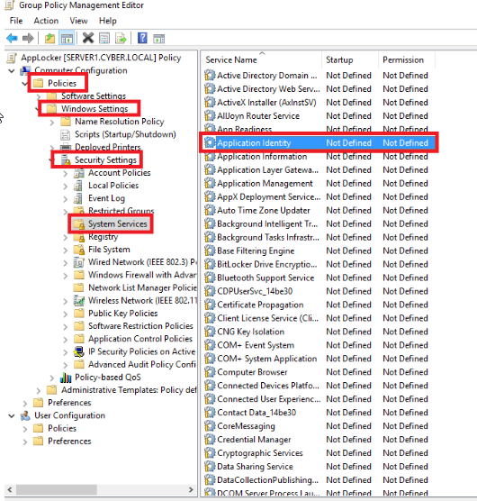

Create New Group Policy Object
call it AppLocker
edit it's setting

After double clicking the Application Identity Properties

Second Step: (All inside the same GPO)- In this task, you will create default settings for all the rules and configure auditing enforcement